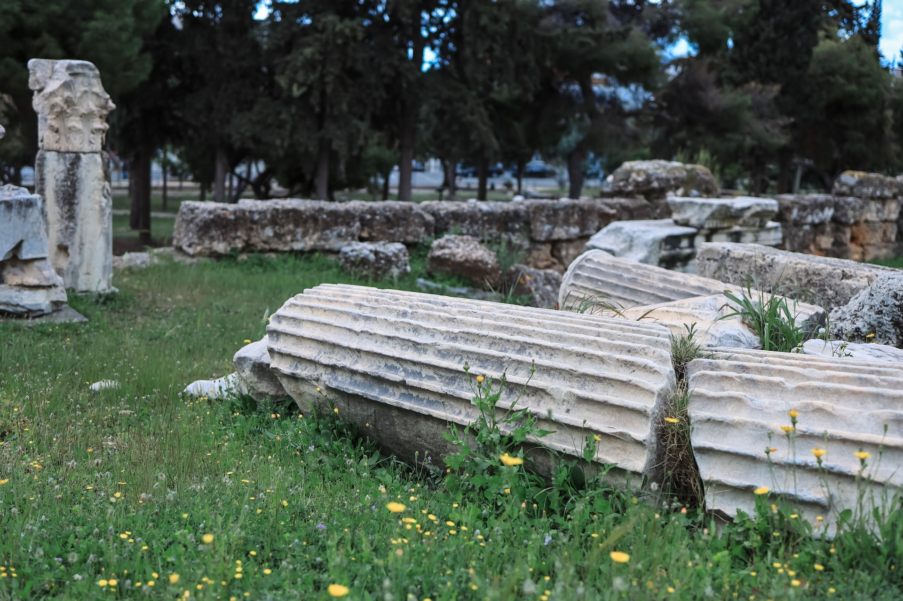

PlutoCoding
Home
Portfolio
About Me
Resume
Contact
Portfolio
First Project WIP

Second Project WIP
Third Project WIP
About Me
Here's some info about me!
I am 25 years old, and no matter how old I get, I will continue learning!
I love animals and nature. I have 5 cats and I like to hike!
I'm very sympathetic for other people!
Resume
Resume Info
Bachelors from Rutgers University: New Brunswick. (Major in Criminal Justice, Minor in Psychology)
5 Years in the New Jersey National Guard as an 11b (Infantryman)
(Hopefully) a graduate of the Columbia University Web Dev Coding bootcamp!